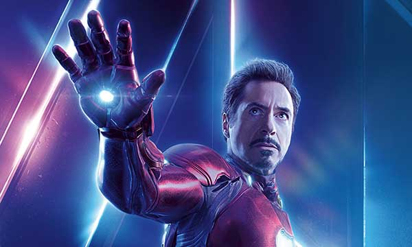
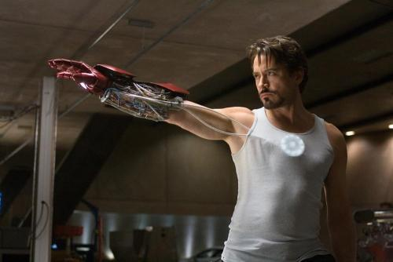
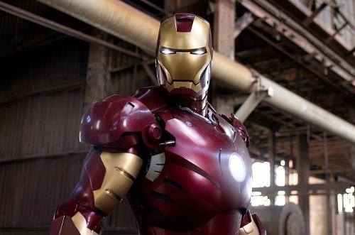
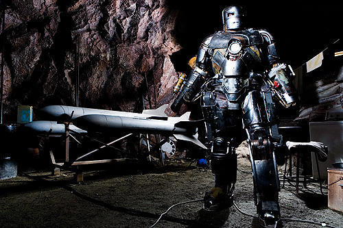
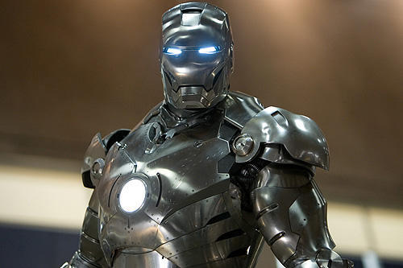
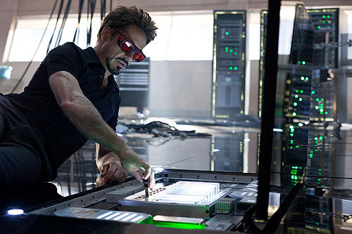
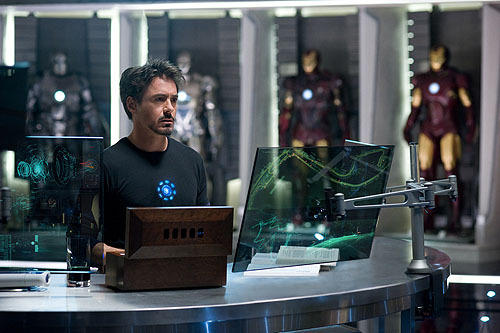
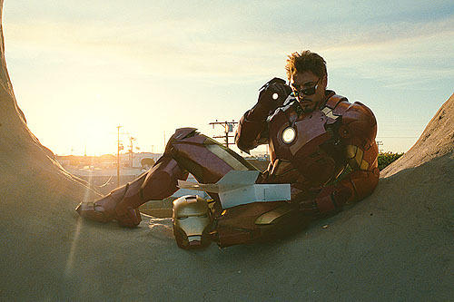

アイアンマン | AVENGERS（アベンジャーズ）｜ 特設サイト
アイアンマン
最新鋭のパワードスーツで戦うセレブヒーロー

天才的な頭脳を持つ実業家であり発明家。自ら開発した最新鋭のパワードスーツを装着してアイアンマンとなれば、全身が最強の武器となり、超人的な腕力や音速飛行のパワーを発揮する。手のひらには光学兵器リパルサー・ビーム、胸にはユニ・ビームを搭載。スーツは複数のタイプが存在し、常にグレードアップされている。
キャスト情報
- 名前：ロバート・ダウニー・Jr
- 役名：トニー・スターク / アイアンマン
- 生年月日：1965年4月4日
- 年齢：53歳
- 出身地：アメリカ合衆国 ニューヨーク州 ニューヨーク マンハッタン
- 身長：174 cm
アイアンマン フォトギャラリー
| アイアンマン |
|  |
 |
|  |
 |
| アイアンマン2 |
|  |
|
|  |
 |
TOPページへ戻る